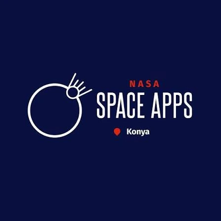
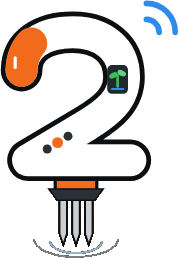

Pilot bölge · Konya Ovası
Sat

SoilUydunun gözü,
tarlanın içinde.
NASA uydu verisi, cebinizdeki uygulama ve elinizdeki saha cihazı: tarlanız için ne ekeceğinize, suyunuzu nasıl kullanacağınıza ve ilacın her yere ulaşıp ulaşmadığına birlikte karar verin.
Hermes Five · Yunus Emre Atmaz · Ela Nur Göçel · Onur Bayram · Umut Talha Berberoğlu · Mehmet Ali Alkan